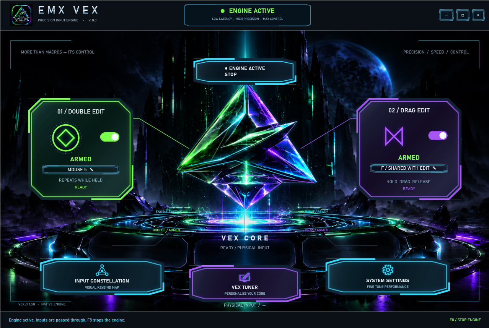
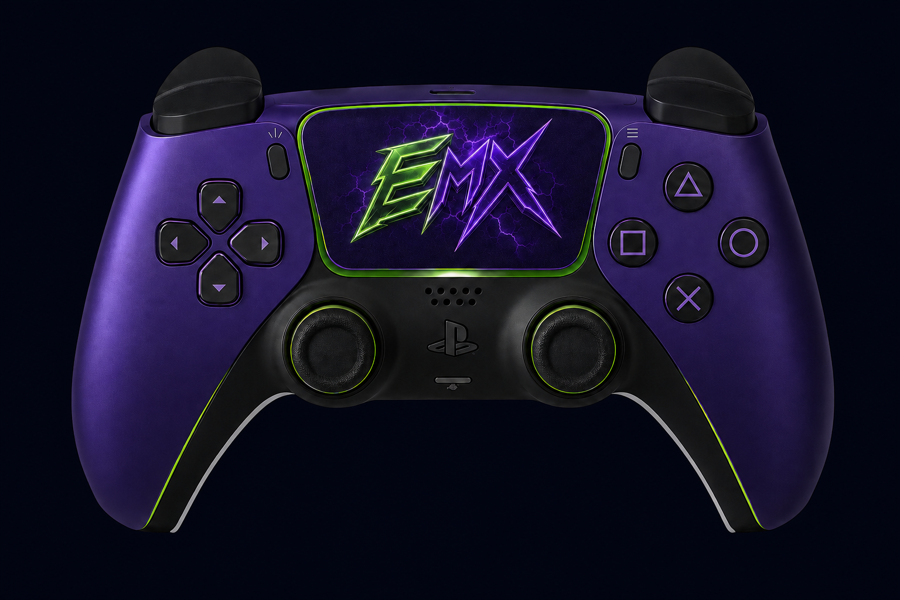

Coordinated profiles
Reliable, Balanced, and Speed update related timing windows together.
CURRENT INTERFACE • v0.1.76
The current Windows keyboard and mouse macro control app with a Rust-powered runtime, coordinated profiles, saved binds, focus safety, emergency stop, help center, and signed update checks.

EMX VEX · KEYBOARD & MOUSE
Configure Double Edit and Drag Edit independently with keyboard and supported mouse bindings. Use Input Constellation to set your controls, adjust Double Edit speed, and personalize the VEX Core through VEX Tuner.
Includes a Windows x64 setup, product-specific one-PC activation, saved preferences, an F8 emergency stop, and verified in-app update downloads.

ALSO FROM EMX · CONTROLLER
Prefer a controller? EMX Controller Macro is a separate macro built for controller players — PlayStation-first Double Edit and Drag, configurable bindings, saved presets, and the official Windows download.

Reliable, Balanced, and Speed update related timing windows together.
Macro state, binds, emergency stop, and safety controls remain in reach.
The current Help tab includes setup guidance and a visible progress checklist.
FULL-FRAME CAPTURES
Each screenshot is shown in full without cropping. Select any image to open the full-resolution file.
The Settings capture is intentionally not published because the live screen contains license and device information.